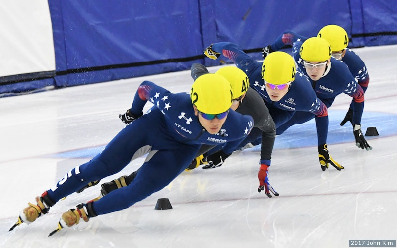

Speed skating is a sport that is extremely highly demanding. It takes hours upon hours of both on and off ice training to build up good technique. Skaters train with high level speed skaters, doing a 2:1 off ice to on ice ratio. They develop skill and ablility to simply move faster on ice. It is not a team sport, however many friends are made. Speed skates are longer, with long heels for added surface area on the ice. They do not have tie picks, but have low boots in comparision to hockey and figure skates.
Short Track
Speed skaters skate short distances, showing their strength in speeding through a small amount of laps. Short track is sometimes refered to as "NASCAR on ice".
Long track
Speed skaters skate long distances, normally 40 km in a oval ice rink. This distance is akin to the distance of running a mile. On outdoor ice, distances can be as long as 200 km. Skating long distances tests the skater's endurance, and their ability to maintain a steady speed without shortening out.